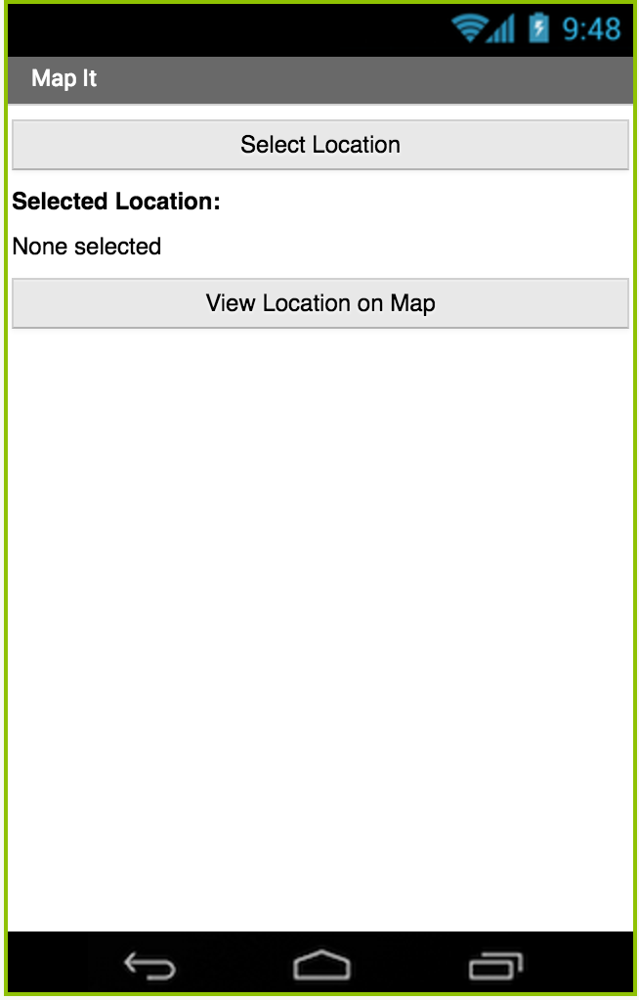
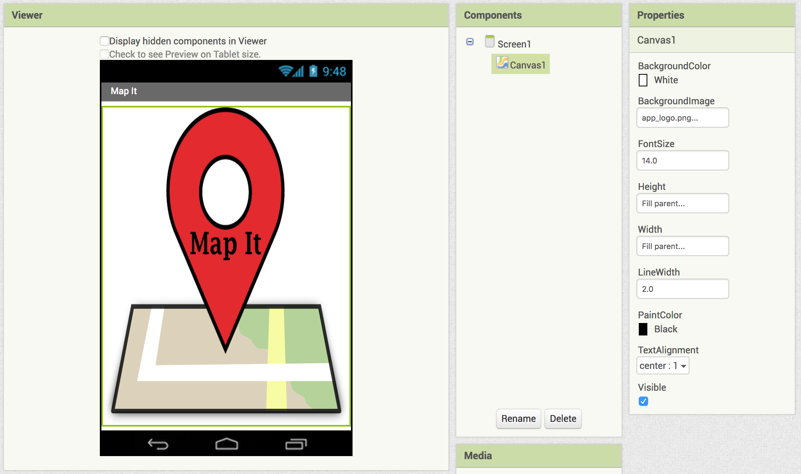
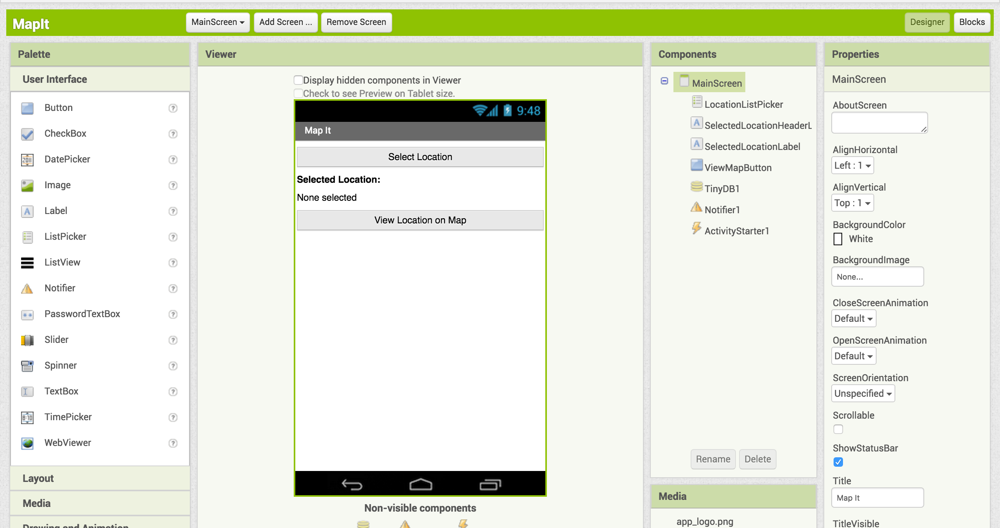
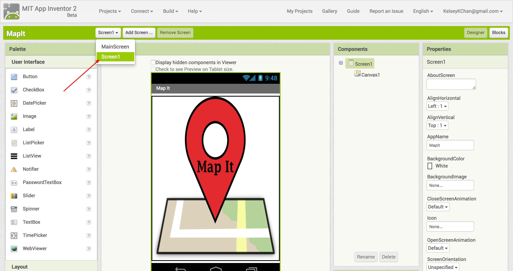
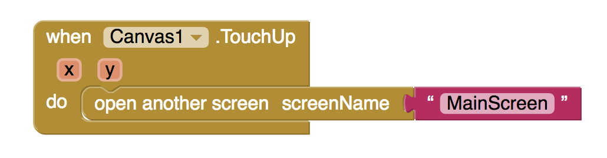
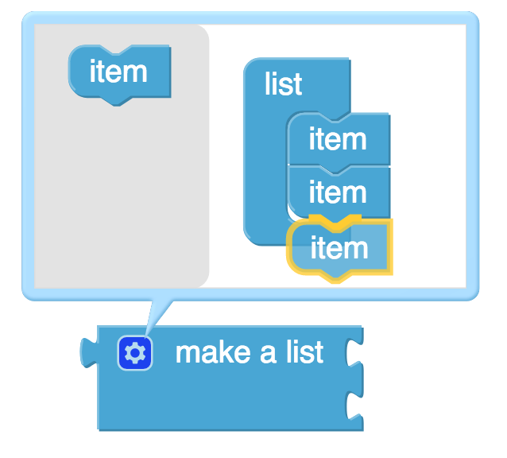

In this codelab, you'll make an app that allows you to choose from a list of addresses and view the location on Google Maps. 
What you'll learn
- Use lists to store data.
- Use ListPicker to let users choose from a list.
- Use ActivityStarter to start up Google Maps from your app.
- Use Notifier to display messages on your app.
- Use TinyDB to save data persistently.
Create a new project called
MapIt(no spaces).
- Set the screen title to "Map It".
The starting screen for this app will be the Map It logo. When the user clicks on the logo, the app will move onto the next screen.
Challenge
Add a Canvas component and set the Background Image to app_logo.png.
{kind=link}
We will need to create a new screen called MainScreen
for the main app functionality.
Design your user interface so that at a minimum it has the following elements:
- a heading Label that says "Selected Address:"
- a Label that displays the selected address
- a ListPicker to select a location
- a Button to view the selected location on a map
- a TinyDB component
- a Notifier component
- an Activity Starter component
Remember to give your components meaningful names!
This next step will allow you to switch from the starter screen to the main screen by clicking anywhere on the logo.
- Make sure you have selected
Screen1(the starter screen).
 - Switch to the Blocks view and add the following blocks.

We use lists all the time in real life. Think of grocery lists, top songs lists, todo lists, etc. Lists are also super useful when programming.
In this step, we will use a list to keep track of different locations that the user can select.
Challenges
- Initialize a global variable called
locationList. - Use a
make a listblock (from the "Lists" drawer) to create a list. By default, the list will only contain two items, but you can add more space to your list by clicking on the small gear icon in the top left corner of the block. Drag as manyitemblocks as you need into thelistblock on the right.
 - Populate your list by adding text string blocks with names of locations. Add at least 3 locations (e.g. Fenway Park, Disneyland, Eiffel Tower).
- Use the
when MainScreen.Initializeevent handler to populate the ListPicker with the locations inlocationsList. Hint: Use theset ListPicker.Elementsblock. - Use the
when ListPicker.AfterPickingevent handler to set the text of the SelectedLocationLabel toListPicker.Selection. What do you think this does?
If you restart your app, you will notice that your selected location is not saved. You have to click on the ListPicker again to reselect your desired location.
Luckily for you, the TinyDB component allows you to save your selected location so that the next time you open your app, the location you selected will still be selected!
First, let's talk about what a database is. You can think of it as a way to store information in an organized manner. The data stored on a TinyDB component is available each time the app is run.
Storing Data
We need to label the data we want to store using a tag.
In the example below, we use TinyDB to store someone's favorite
singer using the tag favoriteSinger.
Retrieving Data
To retrieve data we need to use the same tag to ask TinyDB
for the information we want. There is a possibility that the TinyDB
does not have any information stored for that tag, so we need to
specify what value to return for that scenario. It's okay to use an
empty text string for valueIfTagNotThere, but in the
example below, we return Beyonce if the TinyDB does not
have any information under the tag favoriteSinger.
Challenge
Display the previously selected location, even if the user restarts the app. Hint: Use the TinyDB component.
When the user clicks on the "View Location on Map" button, we want to show the location using Google Maps.
Challenge A
- Create a procedure/method called
showMap. - When the user clicks on the "View Location on Map" button, if the
user has not selected a location, then use the
call Notifier.ShowMessageDialogblock to show a message (e.g. "No location has been selected yet!"). Otherwise, if the user has selected a location, then call theshowMapmethod you made in the previous step.
Activity Starter
The
Activity Starter component is useful when we want to open
other applications on the phone from our own app. There are two
properties of the Activity Starter that we need to set: the Action
property and the DataUri property.
Challenge B
Fill in your showMap method as follows.
You have used App Inventor to create an app that shows locations on a map.
What we've covered
- Use lists to store data.
- Use ListPicker to let users choose from a list.
- Use ActivityStarter to start up Google Maps from your app.
- Use Notifier to display messages on your app.
- Use TinyDB to save data persistently.